빠르게 습득할 줄 아는
배움에 진심인 사람
이력&프로젝트
기업 채널
컨텐츠 기획, 제작
# 배경
- 다자털로의 전환, 디지털 트랜스포메이션이 대두되며 많은 기업들이
디지털 트랜스포메이션을 위한 다양한 툴에 대해 고민하게 됨.
아울러, 블록체인으로 인한 기업 보안까지 화두로 떠오르며
이런 다양한 문제를 해결하기 위한 서비스를 찾게되면서 클라우드 기반의
Microsoft365을 시나리오 형식으로 풀어낸 컨텐츠를 기획, 제작하게 됨
# 목표
- Microsoft365에 포함된 Teams, Outlook, Office 등의 툴을 시나리오 형식으로 풀어내어 기업들에게 사용가치를 전달하고 도입을 도움
# 해결방안
- 기업 채널(Naver Blog, YouTube)를 활용해 텍스트, 영상 컨텐츠를 통한 서비스 가치 전달
- Microsoft365와 관련된 제안서, 소개서 제작 및 웨비나 프로모션 진행
# 활용툴
비대면
정부지원 사업
# 배경
- 4차 산업혁명과 COVID-19 이슈가 맞물리면서 기업의 디지털화가 빠르게 진행 되는 상황
- 평소 비용 부담으로 디지털화를 망설이는 중소기업들을 대상으로 정부 지원금을 활용하여 부담없이 비대면 협업 솔루션 및 전자결재를 도입할 수 있도록 제안하고, 기업이 디지털화 할 수 있도록 도움
# 목표
- 비대면 협업 솔루션 및 전자결재 솔루션 도입 홍보
- 정부지원 사업을 통한 중소기업의 디지털 트랜스포메이션을 도움
- 신규 고객 확보를 통한 매출 증대
# 마케팅
- 비대면 정부지원 사업 및 제품 소개 콘텐츠 발행
- 비대면 정부지원 사업 및 제품 소개 웨비나 진행
- 홍보기사 진행
- Google Ads를 활용한 키워드, 디스플레이 광고 진행
# 활용툴
자사 솔루션
이탈률 개선 제안
# 배경
- 자사 서비스 전자결재 솔루션 무료체험을 신청했던 고객들이 실제 도입까지 전환되는 비율이 약 7~10%로 나타남
- 높은 이탈률의 원인을 파악하고 사용자 환경을 개선하기위한 목적으로 무료체험 사용환경 설문조사, 사용자 온보딩 과정을 기획
# 목표
- 이탈률 개선을 위해 무료체험 진행 고객을 대상으로 설문조사를 진행하여 이탈 원인을 수집하고 추후 서비스 개선을 위한 데이터로 활용
- 무료체험 시 기능 테스트 어려움을 줄이기 위해 온보딩 과정을 추가하여 무료체험 기능 테스트를 원활하게 함
# 해결방안
- 매출 증대 및 이탈률 개선의 필요성 설득을 위한 내부 기획안 작성
- 시안을 제작하여 실제 구현 방안을 제시
# 활용툴
이메일 자동화
프로세스 개선
# 배경
- 단순 반복되는 이메일 어붐 자동화를 통한 업무 효율성 향상을 위해 CRM 이메일 자동화 프로세스 개선방안을 제안
# 목표
- 신규유입 Lead에 대한 자동화 너처링 진행을 진행하여 주요 업무에 집중할 수 있는 업무 환경 구축
- 수집된 데이터를 활용하여 이탈율 개선을 위한 새로운 마케팅 메시지 개발
# 해결방안
- 기존 이용중인 Getresponse 툴을 최대한 활용하는 방향으로 자동화 프로세스 구축 진행
# 활용툴